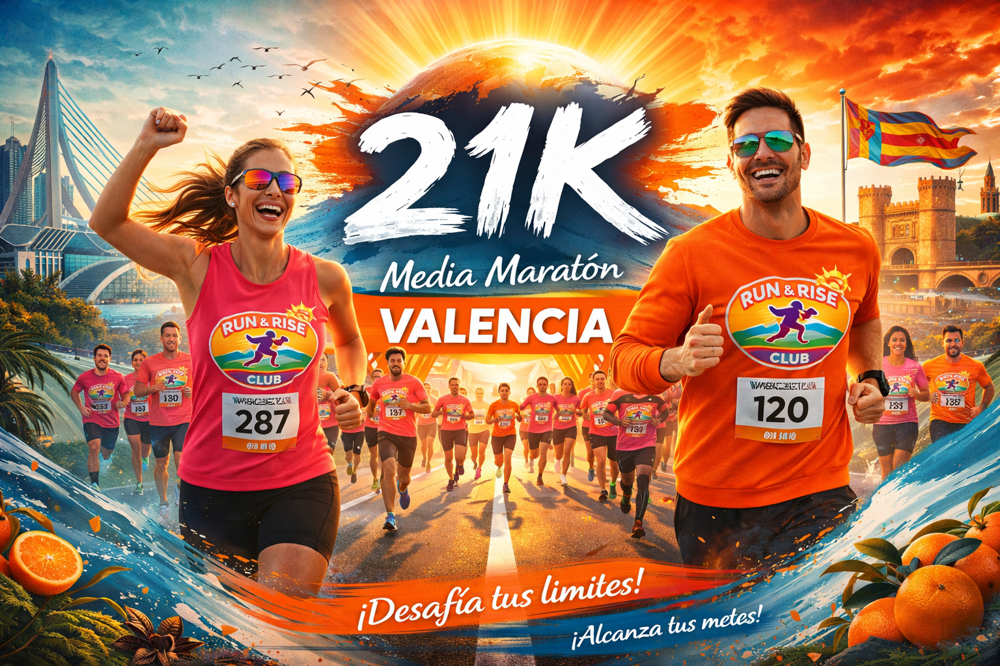

Nos vamos a la ciudad del running. Reserva tu plaza en nuestro viaje de club.

La Media Maratón de Valencia es conocida a nivel mundial por lo rápido que es su circuito y por ser el escenario donde se baten récords habitualmente. Pero ir solo puede resultar aburrido y logísticamente complicado de organizar.
En Run & Rise Club te lo ponemos súper fácil con nuestro pack cerrado. Tenemos billetes de tren bloqueados saliendo desde la estación de Santa Justa en Sevilla el viernes, estancias en un hotel céntrico (a menos de 20 mins andando de la salida de carrera), y las gestiones del dorsal cubiertas.
Además de la carrera, haremos nuestra mítica ruta de tapas el sábado por la tarde, visitaremos la feria del corredor todos juntos y por supuesto, nos haremos la foto de equipo con nuestras medallas el domingo tras cruzar la meta. Sólo asegúrate de llevar las zapatillas y las ganas de pasártelo genial.